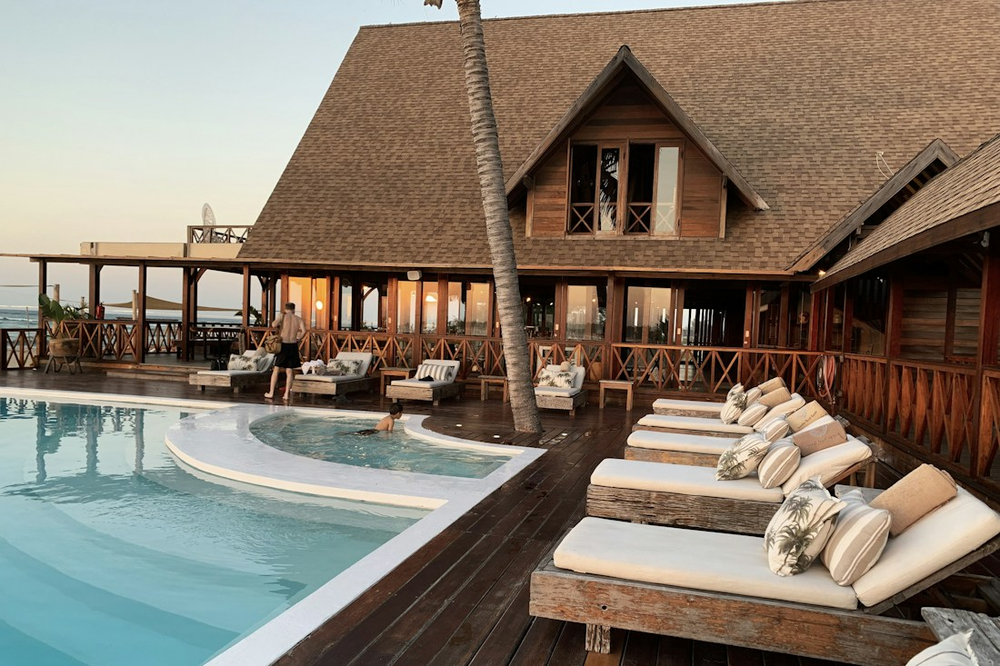

Yapay Zekâ
Telefon Asistanı
Misafiriniz otelinizi aradığında, yapay zekâ sesli asistanınız yanıtlar. Telefon deneyimini keşfedin.
Sesli asistanı keşfedinMisafirleriniz otelinizi telefonla aradığında, onları yapay zekâ sesli asistanınız karşılar. Sorularını dinler, sesli olarak yanıt verir. İlk merhabadan itibaren otelinizin telefon deneyimini yeniden tasarlayın.
İlk mesajdan rezervasyona,
her adımda yanınızda.
Misafirleriniz otelinizi telefonla aradığında, onları yapay zekâ sesli asistanınız karşılar. Konuşma sesli olarak ilerler; misafiriniz sorusunu sorar, asistanınız yanıt verir.
İlk “merhaba”dan itibaren, otelinizin telefon deneyimini birlikte yeniden tasarlayalım.
Misafiriniz konuşur, sesli asistanınız yanıtlar.
Merhaba, otelimize hoş geldiniz. Ben yapay zekâ sesli asistanınız. Size nasıl yardımcı olabilirim?
Dijital resepsiyondan telefon asistanına, otel yönetiminden akıllı kapı sistemlerine: ihtiyacınıza uygun çözümü keşfedin.
Misafiriniz otelinizi aradığında, yapay zekâ sesli asistanınız yanıtlar. Telefon deneyimini keşfedin.
Sesli asistanı keşfedinOtel yönetim sistemi ihtiyaçlarınızı birlikte değerlendirelim. Otelinizin işleyişine uygun çözüm hakkında bilgi alın.
Çözüm hakkında bilgi alınOteliniz için akıllı kapı kilit sistemlerini keşfedin. Kurulum ve çözüm seçeneklerini ekibimizle görüşün.
Çözüm hakkında bilgi alınPunn Dijital Asistan, işletmenizin ihtiyaçlarına göre eğitilir ve 7/24 hizmet verir. Farklı sektörlere uyum sağlar, süreçlerinizi kolaylaştırır, müşteri memnuniyetinizi artırır.
Rezervasyon, müsaitlik, misafir talepleri ve sanal POS ile satış
KONAKLAMAAraç müsaitliği, fiyat ve rezervasyon
ARAÇ KİRALAMAÜrün bilgisi, stok ve müşteri desteği
PERAKENDESipariş, ürün önerisi ve satış desteği
DİJİTAL TİCARETBilet satış, sefer, güzergâh ve yolcu bilgilendirmesi
YOLCU HİZMETLERİVatandaş soru ve taleplerine cevap ve raporlama
KAMU HİZMETLERİRezervasyon, menü bilgisi ve sipariş desteği
YEME & İÇMEMenü, sipariş ve müşteri desteği
MÜŞTERİ DENEYİMİOtel ekipleri tekrar eden sorularla zaman kaybetmez. Misafirler hızlı yanıt alır, konuşmalar düzenli takip edilir ve tüm süreç raporlanabilir hale gelir.
WhatsApp, Instagram, Messenger ve Web Chat konuşmalarını tek ekranda yönetin.
Misafirlerin sık sorduğu sorulara 7/24 hızlı, doğru ve doğal cevaplar verin.
Yabancı misafirlerle kendi dillerinde profesyonel iletişim kurun.
En çok sorulan konuları, kanal performansını ve rezervasyon fırsatlarını görün.
Önemli gelişmeleri ve rezervasyon detaylarını anında e-posta üzerinden takip edin.
Misafir otelde geldikten sonra da ulaşım, yeme-içme, gezi ve otel içi ihtiyaçlar konusunda iletişime devam eder.
Ödeme linki göndererek ön provizyon veya peşin ödeme alabilme.
Konaklama sonrasında misafire değerlendirme mesajı ileterek Google, Booking veya ETS üzerinden puanlama isteme.
Müsaitlik sunar, yönlendirir ve talebi doğrudan rezervasyona taşır.
Otel yönetim programı ile bağlantı sayesinde oda durumlarını görme, bilgi verme ve rezervasyon oluşturma.
Asistanı kolayca eğitebilir, istediğiniz saatlerde açıp kapatabilir ve çalışma düzenini belirleyebilirsiniz.
Potansiyel misafirleri, talepleri ve dönüşüm sürecini tek panelde izleme.
Tüm konuşmalar tek panelde toplanır. AI gerektiğinde yanıtlar, gerektiğinde ekibinize devreder.

Digital Reception otelinizin bilgileriyle eğitilir, iletişim kanallarınıza bağlanır ve misafir mesajlarını tek merkezden yönetmeye başlar.
Otel açıklamaları, oda bilgileri, fiyat politikaları, transfer ve sık sorulan sorular sisteme tanımlanır.
WhatsApp, Instagram, Messenger ve Web Chat görüşmeleri tek panelde toplanır.
Misafir mesajları 7/24 karşılanır, gerektiğinde konuşma manuel ekibe aktarılır.
Temel dijital resepsiyon paketi
Satış ve analiz odaklı gelişmiş paket
WhatsApp, Instagram DM, Messenger ve Web Chat üzerinden gelen misafir mesajlarını tek panelde yönetmek için tasarlanmıştır.
Sistem kontrollü bilgi kaynaklarıyla çalışır. Gerekli durumlarda konuşma manuel ekibe aktarılabilir ve AI davranışları otelinize göre düzenlenebilir.
Otel bilgileriniz hazırsa temel kurulum kısa sürede tamamlanabilir. Demo sürecinde kullanım senaryoları birlikte netleştirilir.
Evet. Misafir hangi dilde yazarsa yazsın aynı dilde doğal ve profesyonel yanıtlar üretilebilir.
Evet. Kurulum, temel eğitim ve teknik destek demo sürecine dahildir.

15 günlük demo ile Digital Reception’ı gerçek misafir iletişim süreçlerinize göre deneyin.
Ücretsiz Demo Talep EtMüşteri referanslarımız ve otelinize uygun kullanım senaryoları hakkında ekibimizden bilgi alabilirsiniz.